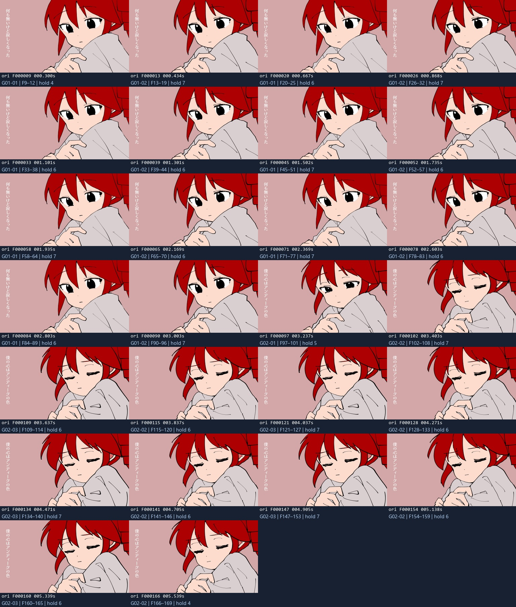

MAGIC MAID · DRAWING REFERENCE
魔法女仆 · 分段与绘制帧拆解
以附件1为时间与画面依据，按附件2的逐张编号和文字提醒建立绘制参考。循环复用、人物换稿、道具、字幕与特效分别记录。
37工作段 / 含声片段
340参考片编号与单帧图
71原片补充参考
4763原片视频帧
附件1 · 原尺寸逐帧精选原帧巡览
附件2 · 编号参考
打开双视频播放器 · 原片与参考片使用各自的时间，选图可同时定位
附件1 · 720p H.264查看副本 / 原声
附件2 · 720p H.264查看副本 / 原声
411张是绘制参考图数量。其中含合成特效、同稿复现与不同构图，不能直接理解为411张独立人物原画。人物稿需要复用的地方已保留提醒。
按原片分段
时间为原片实际PTS。帧号从0开始；卡片显示含尾帧，CSV使用半开区间 [start,end)。每段可单独播放或打开含声MP4。绘制参考库
G01–G51来自附件2，编号在每组内重新从1开始；X01–X05由附件1补充。点图可比较原片与带编号参考。参考片里的文字提醒
以下文字是附件2的拆解提示。循环和“再来一次”演示不另加绘制张数；原速曝光仍看附件1。
安排绘制时，先处理这些复用关系
| 内容 | 对应关系 | 绘制安排 |
|---|---|---|
| 黑裙半身 / 全身舞蹈 | G12 ↔ G33 | 先看全身版的重心、脚和裙摆，再对照半身版的手势与表情。两组编号都保留；没有把所有相似姿态强行合成同稿。 |
| 黑裙舞蹈复现 | M09 → M21 / M24 | 既有动作局部放大、裁切或删节后再用。按各段原片接回顺序，不把整组编号机械循环。 |
| 黑条歌词手势 | M10 ↔ M25 / G13 | 参考片只列29个非重复编号。相同动作回用；歌词的增加或撤出独立做。 |
| 房间、藤蔓与字框 | G03 / G14 / G34–G36 / X04 | 框体和房间背景可复用。钟表和新布置另补，字、花瓣与透明度单独安排。 |
| 黑裙与红裙的相近动作 | G21 ↔ G49；G12 ↔ X01/X02 | 动作可以参照。红袖、长手套、领结、裙摆和泪光确有变化，需要按红裙原帧处理。 |
| 幽灵、放射、星芒、花瓣 | G06/G07、G11/G31、G45/G46、X03/X05 | 人物与底稿保持时，特效仍可变化。先把变化归到对象，再决定是否重画人物。 |
画法观察
原片以粉色底、红发和黑白/红白衣装为主，外轮廓与内线都较简洁，色块大多平涂。姿态相同的相邻稿仍有衣褶、发缘、手指和线宽差异；同一稿持帧时应保持笔道。眼睛、手和道具接触处优先看原尺寸。仅凭成片不能确认作者使用的软件、笔刷或原始图层。
开场人物曝光核对
F9–F169：5个人物态、26次连续曝光、161个视频帧。睁眼两态交替，接一个半闭眼过渡，再交替两种闭眼态。持帧出现4、5、6、7帧；不作为全片统一拍数。
| 人物态 | 原片帧（含尾） | 持帧 | 实际PTS | 查看 |
|---|

其余段落已有分段、逐张参考和全片逐帧索引；没有将机器相似度直接当成全片人物原画的逐帧绑定表。
本资料保留1920×1080原尺寸解码图及来源；没有擦字、补线、生成人物或恢复作者透明图层。视频与接触表是查看副本。完整4763张原片PNG位于frames/。本压缩包含精选原帧、参考图与含声分段；完整4763张原片PNG保留在工作目录。 ↔ 键看原片帧，A / D 切参考图；输入框内不接管键盘。